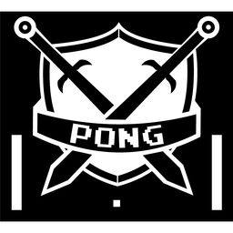
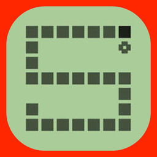

Game List
Click on a game icon to launch the game!
Pong
Pong is one of the earliest arcade video games and the first sports arcade video game. It is a table tennis sports game featuring simple two-dimensional graphics.
Snake
Snake is the common name for a videogame concept where the player maneuvers a line which grows in length, with the line itself being a primary obstacle.
Flappy Birds
Flappy Birds is a side-scroller where the player controls a bird, attempting to fly between rows of green pipes without hitting them.